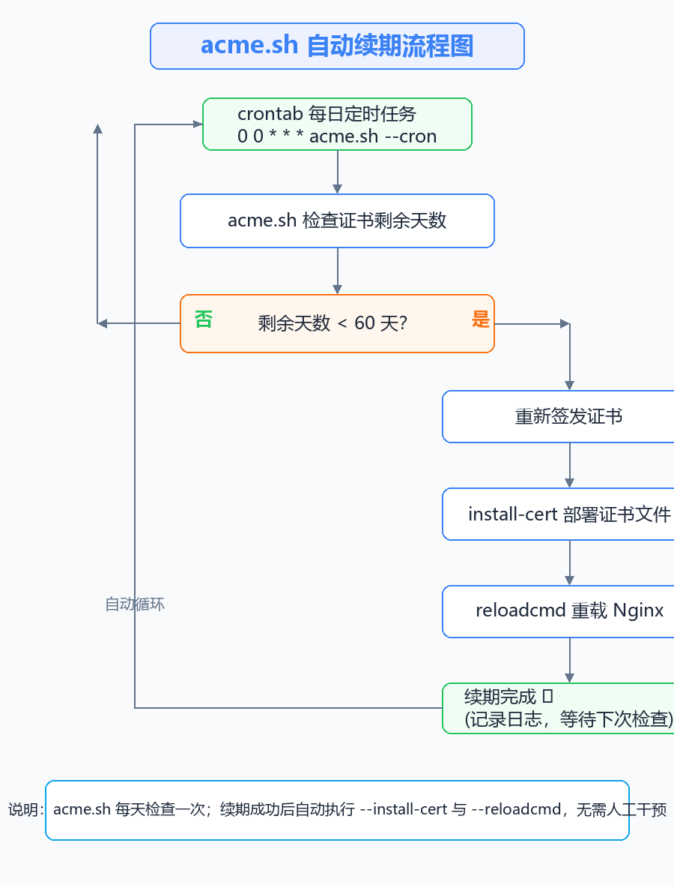
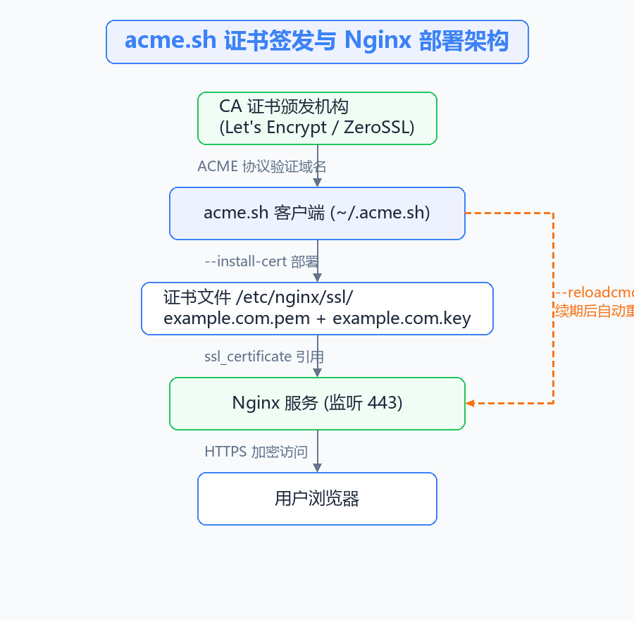

acme.sh 简介
HTTPS 证书通常有效期为 90 天（Let’s Encrypt）或更长，手动续期不仅繁琐还容易漏掉，一旦证书过期，浏览器就会直接报安全错误。acme.sh 是一个纯 Shell 实现的 ACME 客户端，可以自动完成证书的申请、安装和续期，全程无需人工干预。
acme.sh 的主要特点：
- 纯 Shell 脚本，无任何依赖，安装即用
- 支持 Let’s Encrypt、ZeroSSL、BuyPass 等多家 CA
- 支持 webroot、nginx、DNS 等多种验证方式，DNS 方式可签发泛域名证书
- 安装时自动注册 crontab 定时任务，每天检查证书有效期，剩余不足 60 天自动续期
- 续期成功后自动执行
--reloadcmd指定的命令（如重载 Nginx），无需手动操作
整体流程如下：

安装 acme.sh
使用以下命令一键安装（安装到当前用户目录 ~/.acme.sh）：
curl https://get.acme.sh | sh
root@web-server:~# curl https://get.acme.sh | sh -s email=admin@example.com
% Total % Received % Xferd Average Speed Time Time Time Current
Dload Upload Total Spent Left Speed
100 2268 100 2268 0 0 4978 0 --:--:-- --:--:-- --:--:-- 4978
[2026-08-01 10:00:01] Installing from online archive.
[2026-08-01 10:00:02] Downloading https://github.com/acmesh-official/acme.sh/archive/master.tar.gz
[2026-08-01 10:00:05] Installing to /root/.acme.sh
[2026-08-01 10:00:06] Installed to /root/.acme.sh
[2026-08-01 10:00:06] Installing alias to '/root/.bashrc'
[2026-08-01 10:00:06] OK, Close and reopen your terminal to start using acme.sh
[2026-08-01 10:00:06] Installing cron job
[2026-08-01 10:00:07] Good, bash is found, so change the shebang to use bash as preferred.
[2026-08-01 10:00:08] Install success!
提示：
-s email=xxx为可选参数，指定注册邮箱。如果忘记指定，也可以稍后通过--register-account注册。
安装完成后可以查看帮助确认：
~/.acme.sh/acme.sh –help
注册 ACME 账号
使用默认 CA（ZeroSSL）前需要注册账号：
~/.acme.sh/acme.sh –register-account -m admin@example.com
root@web-server:~# ~/.acme.sh/acme.sh --register-account -m admin@example.com
[2026-08-01 10:05:00] Registering account
[2026-08-01 10:05:02] Registered
如果想使用 Let’s Encrypt，可以切换默认 CA：
~/.acme.sh/acme.sh –set-default-ca –server letsencrypt
签发证书的三种方式
签发证书前需要选择域名验证方式，acme.sh 最常用的有三种：
| 方式 | 适用场景 | 是否需要开放端口 |
|---|---|---|
--webroot |
已有网站目录（静态站点） | 80 端口 |
--nginx |
Nginx 已监听 80/443 | 80/443 端口 |
--dns |
无外网访问、泛域名 | 不需要 |
方式一：webroot 模式
适合网站根目录固定、可以写入验证文件的场景：
~/.acme.sh/acme.sh –issue -d example.com -w /var/www/html
root@web-server:~# ~/.acme.sh/acme.sh --issue -d example.com -w /var/www/html
[2026-08-01 10:10:00] Creating domain key
[2026-08-01 10:10:01] The domain key is here: /root/.acme.sh/example.com/example.com.key
[2026-08-01 10:10:02] Single domain='example.com'
[2026-08-01 10:10:03] Getting webroot for domain='example.com'
[2026-08-01 10:10:04] Verifying: example.com
[2026-08-01 10:10:06] Success
[2026-08-01 10:10:06] Your cert is in: /root/.acme.sh/example.com/example.com.cer
方式二：nginx 模式
Nginx 已配置好 80/443 监听时，acme.sh 会自动修改 Nginx 配置完成验证再还原：
~/.acme.sh/acme.sh –issue -d example.com –nginx
方式三：DNS 模式
适合泛域名（*.example.com）或无公网访问的服务器，以 Cloudflare 为例（需要先配置好 API Token）：
export CF_Token=“你的Cloudflare_API_Token” ~/.acme.sh/acme.sh –issue -d example.com -d “*.example.com” –dns dns_cf
提示：acme.sh 内置了几十种 DNS 服务商的 API 对接（dns_cf、dns_ali、dns_dp、dns_he 等），手动添加 TXT 记录也可以，但无法全自动续期，建议优先使用 API 方式。
安装证书到 Nginx
签发完成后，证书文件默认存放在 ~/.acme.sh/example.com/ 目录下，但不建议直接让 Nginx 引用该目录（升级或重新签发时目录结构可能变化），正确做法是使用 --install-cert 把证书复制到固定位置，并指定续期后要执行的命令：
~/.acme.sh/acme.sh –install-cert -d example.com
–key-file /etc/nginx/ssl/example.com.key
–fullchain-file /etc/nginx/ssl/example.com.pem
–reloadcmd “systemctl reload nginx”
root@web-server:~# mkdir -p /etc/nginx/ssl
root@web-server:~# ~/.acme.sh/acme.sh --install-cert -d example.com \
> --key-file /etc/nginx/ssl/example.com.key \
> --fullchain-file /etc/nginx/ssl/example.com.pem \
> --reloadcmd "systemctl reload nginx"
[2026-08-01 10:15:00] Installing key to: /etc/nginx/ssl/example.com.key
[2026-08-01 10:15:00] Installing full chain to: /etc/nginx/ssl/example.com.pem
[2026-08-01 10:15:01] Run reload cmd: systemctl reload nginx
[2026-08-01 10:15:02] Reload success
参数说明：
--key-file：私钥文件路径--fullchain-file：证书链完整文件路径（Nginx 推荐使用 fullchain）--reloadcmd：续期成功并部署完成后自动执行的命令，这里是重载 Nginx
Nginx HTTPS 配置
证书安装好后，修改 Nginx 配置开启 HTTPS：
vim /etc/nginx/conf.d/example.com.conf
server {
listen 443 ssl;
server_name example.com www.example.com;
ssl_certificate /etc/nginx/ssl/example.com.pem;
ssl_certificate_key /etc/nginx/ssl/example.com.key;
ssl_protocols TLSv1.2 TLSv1.3;
ssl_ciphers HIGH:!aNULL:!MD5;
location / {
proxy_pass http://127.0.0.1:8080; # 示例：反代到后端服务
proxy_set_header Host $host;
proxy_set_header X-Real-IP $remote_addr;
proxy_set_header X-Forwarded-For $proxy_add_x_forwarded_for;
proxy_set_header X-Forwarded-Proto $scheme;
}
}
# HTTP 强制跳转 HTTPS
server {
listen 80;
server_name example.com www.example.com;
return 301 https://$host$request_uri;
}
修改配置后务必先测试再重载：
nginx -t && nginx -s reload
证书部署与访问的整体关系：

自动续期原理
acme.sh 安装时会自动注册一条 crontab 定时任务：
crontab -l
root@web-server:~# crontab -l
# acme.sh 自动续期任务，每天凌晨 0 点执行
0 0 * * * "/root/.acme.sh"/acme.sh --cron --home "/root/.acme.sh" > /dev/null
每天定时检查所有证书的有效期：
- 剩余天数 大于 60 天：什么都不做，等待下次检查
- 剩余天数 不足 60 天：自动重新签发证书 → 执行
--install-cert部署 → 执行--reloadcmd重载 Nginx
整个续期过程完全无人值守，这也是"自动续期"的核心。只要证书文件路径不变、reloadcmd 配置正确，Nginx 会一直持有有效证书。
验证与常用命令
- 查看已签发的证书列表
~/.acme.sh/acme.sh –list
- 查看证书到期时间
openssl x509 -enddate -noout -in /etc/nginx/ssl/example.com.pem
root@web-server:~# openssl x509 -enddate -noout -in /etc/nginx/ssl/example.com.pem
notAfter=Oct 30 23:59:59 2026 GMT
- 手动强制续期测试（验证整个自动流程是否正常）
~/.acme.sh/acme.sh –renew -d example.com –force
- 查看 Nginx 是否已加载新证书
nginx -T | grep -E “ssl_certificate|ssl_certificate_key”
常见问题与注意事项
-
证书目录权限：
/etc/nginx/ssl/建议设置为仅 root 可读，私钥文件权限600，证书文件644，避免私钥泄露 -
reloadcmd 权限不足：如果
nginx -s reload报权限错误，改用systemctl reload nginx；Nginx 跑在 Docker 里时使用docker exec nginx nginx -s reload -
Nginx 未监听 80 端口时：webroot/nginx 模式都无法验证，此时只能用 DNS 模式
-
泛域名证书：
*.example.com只能通过 DNS 模式签发，且不支持多级子域名（如a.b.example.com） -
默认 CA 是 ZeroSSL：需要注册邮箱；不想用可以切回 Let’s Encrypt（见上文
--set-default-ca） -
升级 acme.sh：
~/.acme.sh/acme.sh --upgrade，升级不会影响已签发证书 -
服务器重启后证书失效？：不会，证书文件是持久的，cron 任务也会随系统定时器继续执行
总结
acme.sh 的核心价值在于一次配置、永久省心：签发 → 安装 → 自动续期 → 自动重载 Nginx，整个闭环完全自动化。配合 --install-cert 的固定路径部署和 --reloadcmd，可以彻底告别"证书过期网站打不开"的尴尬。
建议所有自建 HTTPS 服务（Nginx、Tomcat、Caddy 等）都纳入 acme.sh 统一管理，运维幸福感直接拉满。